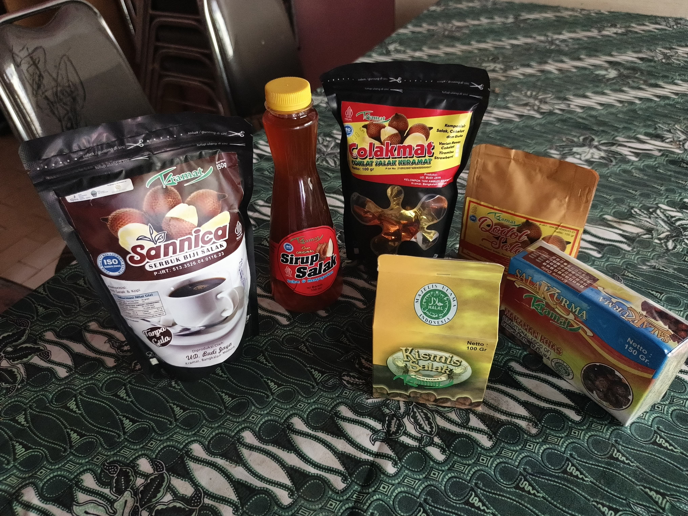

Solusi Terbaik untuk Bisnis Anda
Platform kami membantu Anda mengelola, menganalisis, dan mengembangkan bisnis secara lebih efisien. Fokus pada hal yang penting, serahkan sisanya pada kami.

Platform kami membantu Anda mengelola, menganalisis, dan mengembangkan bisnis secara lebih efisien. Fokus pada hal yang penting, serahkan sisanya pada kami.
Tonton bagaimana produk kami dibuat dan bagaimana kami membantu para petani lokal.
Dibuat dari bahan-bahan terbaik, langsung dari kebun kami.
Deskripsi singkat produk ini.
Deskripsi singkat produk ini.
Deskripsi singkat produk ini.

Deskripsi singkat produk ini.
Deskripsi singkat produk ini.
Deskripsi singkat produk ini.
Dengar apa kata mereka yang sudah merasakan perubahannya.
"Gila, platform ini ngebantu banget! Omzet kami naik 200% dalam 3 bulan. Gampang dipakai dan fiturnya lengkap banget."
Andika Pratama
CEO, Kopi Senja
"Awalnya ragu, tapi setelah coba versi gratisnya, tim kami langsung mutusin buat upgrade. Support-nya juga responsif parah."
Sarah Larasati
Marketing Manager, CreativeHub
"Fitur analitiknya *powerful*. Kami jadi bisa ngambil keputusan berdasarkan data, bukan cuma 'feeling'. *Highly recommended!*"

Bernadus Sinurat
Mahasiswa UTM
"Bagi kami, ini bukan sekadar bisnis. Ini adalah cara kami menjaga warisan leluhur dan menyejahterakan tanah kami."
Lahir dan besar di jantung perkebunan rempah, Pak Solehudin telah mendedikasikan hidupnya untuk pertanian. Beliau memulai semuanya dari sepetak kecil tanah warisan keluarga.
Dengan pengalaman lebih dari 20 tahun sebagai petani, beliau melihat langsung bagaimana hasil panen lokal seringkali dihargai rendah. Berangkat dari kegelisahan itu, beliau mendirikan 'BrandKita' dengan satu misi: memotong rantai pasok dan membawa produk berkualitas tinggi langsung dari petani ke tangan Anda.
Kunjungi kami secara langsung di dua lokasi istimewa kami.
Dapatkan produk berkualitas kami sekarang juga melalui Shopee atau WhatsApp. Tim kami siap melayani Anda.